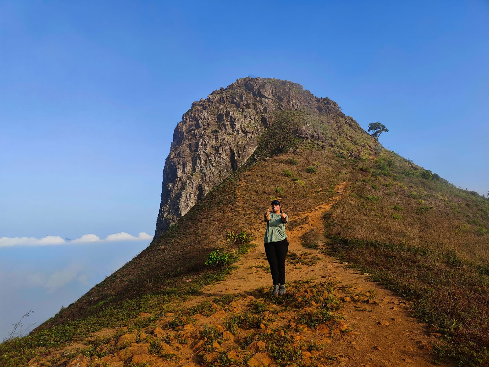
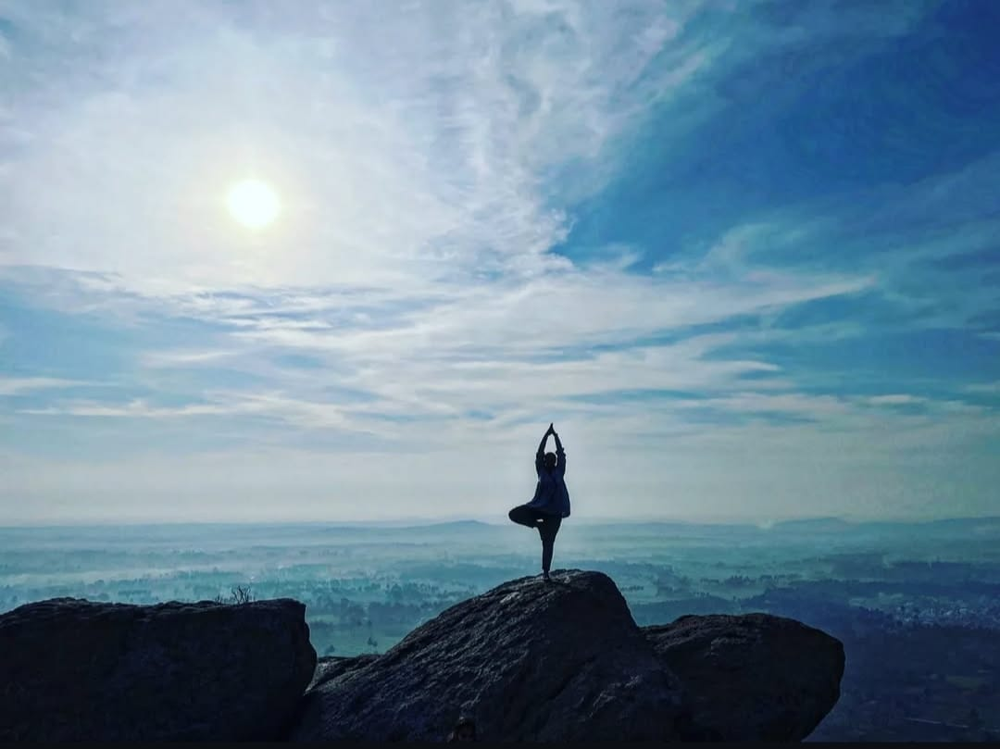

<div class="align-items-center default-container">
    <div class="col-lg-8">
        <div class="content">
            <div class="content-left">
                <h2 class="default-topic">About me.</h2>
                <p class="default-p">
                    My name is Bhavana, and I enjoy <span class="default-highlight">crafting clean, responsive UI components 
                    that improve user experience and accesibility</span>.
                </p>
                <p>
                    
                </p>
                <p class="default-p">
                    I am a Software Developer from Bengaluru, India. Fluent in English / kannada / Hindi / Telugu. 
                </p>
                <p class="default-p">My interest in software development started back in 2018 when I had realised how the
                    technology brought the world to finger tips. Solving problems 
                    through code introduced me to the world of <span class="default-highlight">programming</span>, 
                    <span class="default-highlight">logic</span>, and <span class="default-highlight">automation</span>. 
                    The following year, in 2019 I passed out with a B.E.,computer science degree and landed my 
                    <span class="default-highlight">first job in the tech industry</span>.
                </p>
                <p class="default-p">
                    Fast-forward to today, and I've had the privilege of working with amazing people in the tech industry.
                </p>
                <p class="default-p">
                    I've had the chance to work with a range of <span class="default-highlight">technologies</span> and developed valuable 
                    <span class="default-highlight">soft skills</span>, including leading transformative changes to improve 
                    team dynamics and organizational culture within a tech company. My technical knowledge has expanded 
                    through hands-on collaboration with developers and rigorous study of documentation. Over time, I've gained experience 
                    with programming logic, refined software craftsmanship, contributed to the development of 
                    <span class="default-highlight">websites</span> and built <span class="default-highlight"> GQL API's</span>, 
                    collaborated on building visual dashboards,Tools and participated in retrieving and processing data 
                    from various sources.
                </p>
                <p class="default-p">
                    I have to tell you — I know you probably hear this a lot from other developers, but this much is true: 
                    my passion for technology goes far beyond work — <span class="default-highlight">I <em>am</em></span> 
                    the kind of person who finds joy in <span class="default-highlight">debugging tricky issues</span> 
                    and learning the intricacies of new frameworks just for fun. 
                    I enjoy diving into documentation, 
                    exploring innovative solutions, and <span class="default-highlight">sharing knowledge</span> with my peers. 
                    Whether setting up a personal project to experiment with the latest tech stack or collaborating on a 
                    challenging problem, I'm motivated by curiosity and the thrill of continuous learning. This mindset fuels 
                    my technical growth and, I believe, helps contribute to a positive, dynamic team culture.
                </p>
                <p>
                    
                </p>
                <p class="default-p">
                    Now, we've covered the professional side. On a personal note, here are a few things about me: I'm passionate about  
                    <span class="default-highlight">documentaries</span>,  
                    cooking, photography, <span class="default-highlight">teamwork</span>,  
                    <span class="default-highlight">science fiction</span> and <span class="default-highlight">suspense</span> movies (they're the best!),  
                    <span class="default-highlight">instrumental music</span>, physics and math, and the joy of community experiences. 
                    I wish I could tell you how much I love bike rides and the stories of explorers. When traveling, I enjoy documenting my 
                    <span class="default-highlight">whereabouts</span> and <span class="default-highlight">experiences</span>,  
                    so I can revisit them later.
                </p>                   
                <p class="default-p">
                    I am continuously learning and adapting to new technologies and methodologies. 
                    My goal is to create efficient, scalable, and user-friendly <span class="default-highlight">software solutions 
                    that make a difference and impact.</span>
                </p>
                <p class="default-p">
                    Now that you've read this far, let me wrap this up with a final thought.
                </p>
                <p class="default-p">
                    Humankind is a species that constantly pushes the boundaries of technology. We are explorers at heart. 
                    I take great pleasure in contributing to our <span class="default-highlight">shared story</span> from the frontier of tech.
                </p>
            </div>
            <div class="content">
                <div class="content-left">
                    <h2 class="default-topic">Reach out.</h2>
                    <p class="default-p">
                        Follow me on social media, check out my GitHub account for projects.
                        I would be happy to discuss and learn more and evolve with the technology.
                    </p>
                    <button>
                        <a routerLink="/contact" class="a-green">
                            > Contact me
                        </a>
                    </button>
                </div>
            </div>
        </div>
    </div>
</div>
